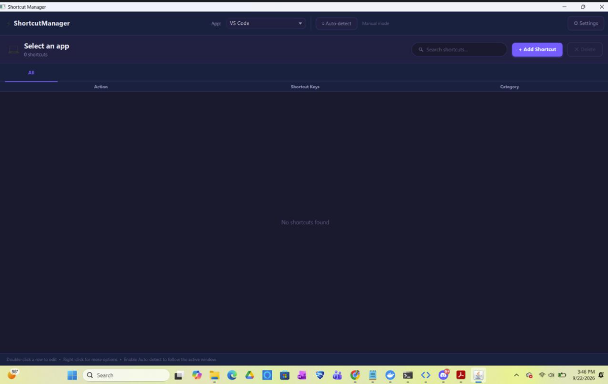

PROJECT OVERVIEW
One Shortcut Reference for Multiple Applications
Modern applications often use large sets of keyboard shortcuts that are difficult to remember when switching between different software environments.
Shortcut Manager provides a central place to organize shortcuts while detecting which applications are currently running on the computer.
APPLICATION DETECTION
Detecting Open Software

The program scans currently running applications and determines which supported programs are open.
This allows Shortcut Manager to present shortcut information that is relevant to the software the user is actually working with.
USER INTERFACE
Active Application List

Detected programs are presented through the JavaFX interface so the user can access application-specific shortcut references from one location.
CUSTOMIZATION
Cross-Application Shortcuts
In addition to predefined application-specific commands, users can organize their own shortcut references for actions that apply across multiple programs.
Common examples include actions such as copy, paste, save, and undo that frequently use similar key combinations across different applications.
SKILLS DEMONSTRATED